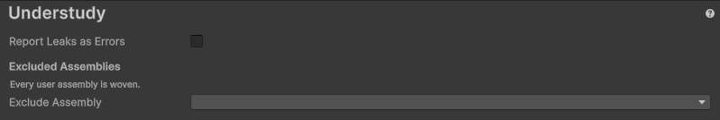

Project Settings reference
The settings on the Understudy page of the Project Settings window.
Understudy page
To open the page, go to Tools > Understudy > Settings, or Edit > Project Settings > Understudy.

| Property | Description |
|---|---|
| Report Leaks as Errors | Logs each leak as an error instead of a warning. The Test Runner fails a test that logs an unexpected error, so each leak fails its test. For more information, refer to Detect leaks. |
| Excluded Assemblies | The assemblies Understudy never weaves: spies, stubs and fakes don't reach their code. Remove takes an assembly off the list. An entry that names no assembly in the project stays on the list, marked (not in the project), in case the assembly comes back. A change stays pending until you select Apply, which recompiles every script, or Revert, which discards it. Leaving the page with a pending change asks whether to apply or revert it. For more information, refer to Exclude an assembly. |
| Exclude Assembly | Adds an assembly to Excluded Assemblies. It lists only assemblies Understudy weaves, and is unavailable when all of them are already excluded. |
Settings file
The settings are saved in ProjectSettings/Understudy.json. Commit it with your project, so every
machine and your continuous integration use the same settings.